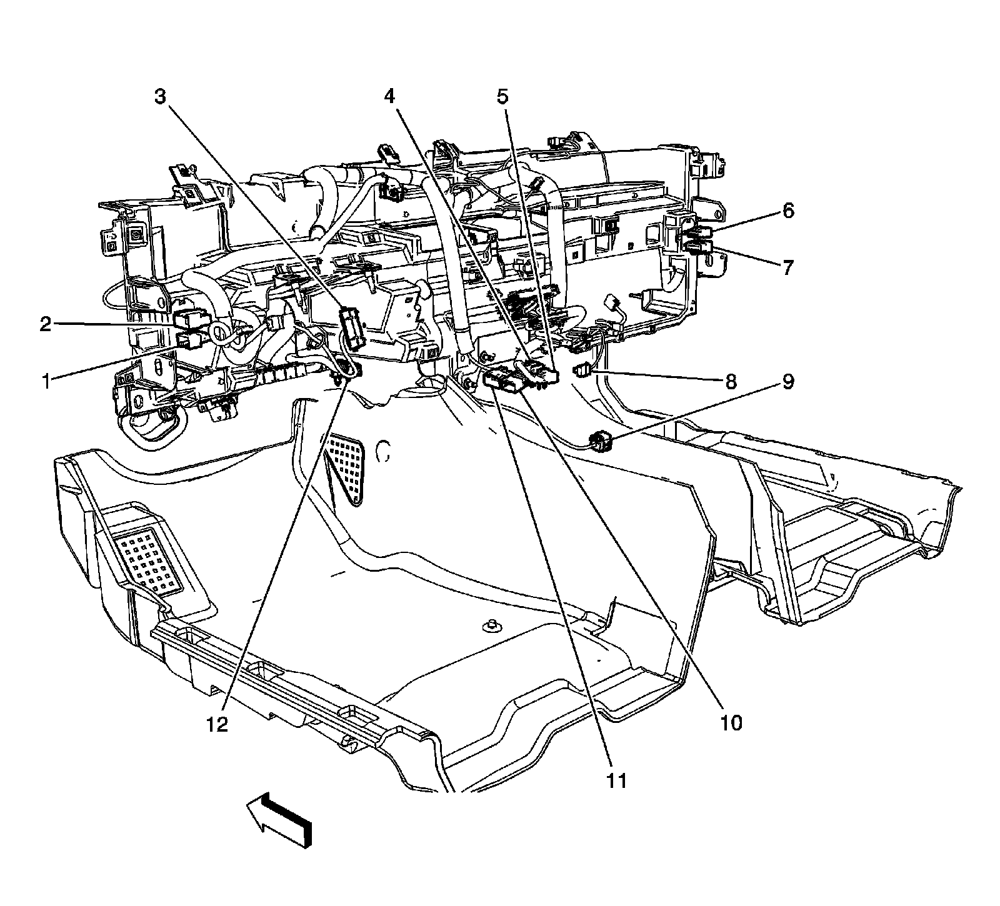
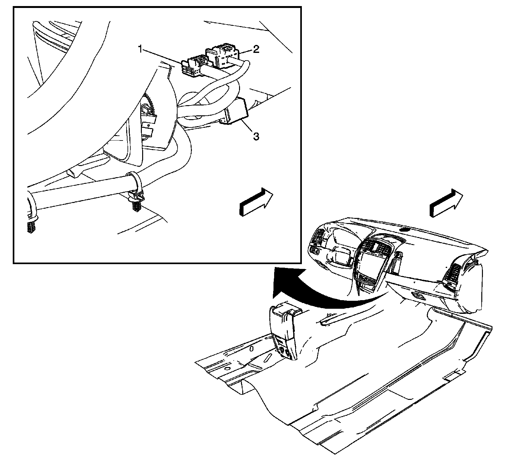
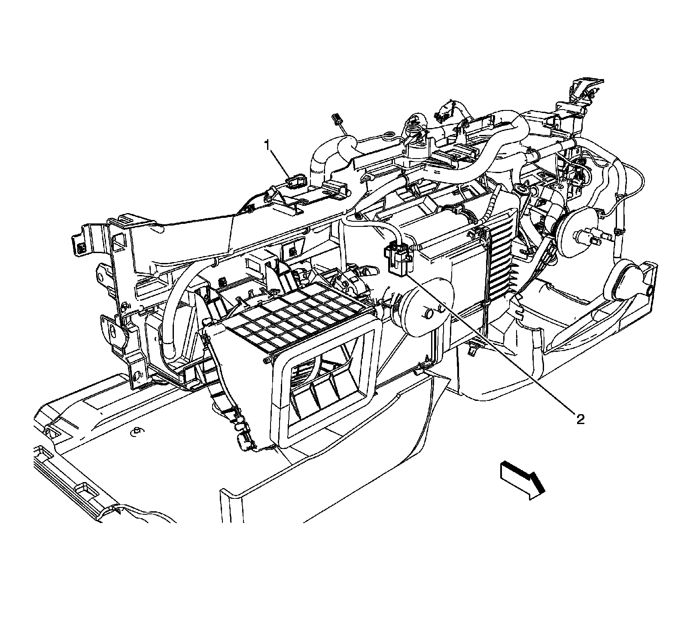

Instrument Panel Harness
Harness Routing Views (LHD)
I/P Harness Routing - Front Engine Compartment

1 - X116
2 - X118
3 - X117
4 - Fuse Block - Underhood X2
5 - X103
6 - X102
7 - G101
8 - Front Fascia
Instrument Panel

1 - X207
2 - X206
3 - X202
4 - X304
5 - X313
6 - X201
7 - X203
8 - X210
9 - X302
10 - X200
11 - X205
12 - JX200
Floor Console

1 - X313
2 - X312
3 - X304
Top Center of Instrument Panel

1 - X204
2 - X321
Instrument Panel Harness Splices

1 - J204
2 - J210
3 - J211
4 - J200
5 - J201
Floor Console Harness Routing

1 - X313
2 - X312
3 - X304
4 - Auxilliary Power Outlets - Rear
5 - Video Display Connector
6 - Rear Seat Audio Module Connectors (AMO)